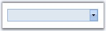

This section discusses the pre-defined styles that can be applied for the control and the css styles that can be applied for various sections of the MultiSelectionDropDown control in the following topics.
· AutoFormat Styles
· CSS Styles
The MultiSelectionDropDown control provides pre-defined set of styles that can be applied to your control on the click of a button. You can set the desired look and feel for the control that includes some popular styles too. Right-clicking the control and selecting the 'Auto Format...' option opens the following Auto Format dialog box.

Figure 131
The left pane lists the various pre-defined styles' schemes that are available. The right pane shows the preview of the currently selected scheme. Select the required style, and click OK to apply the selected scheme to the control.
The following image shows the MultiSelectionDropDown control with White Brick style setting.

Figure 132